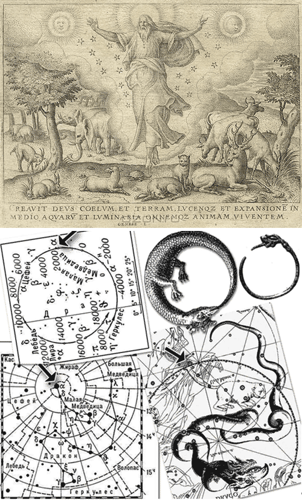

-
Напишите небольшой текст (ну, скажем, в пару твитов) на важную для вас тему, связанную с профессией. Сверстайте его в начале задания.
Первое задание я выполнил после всех остальных, оно резюмирует работу в целом.
Я задумал представить его в виде аннотации и стилизовать в манере издательства "Питер", так как здесь предоставляется хорошая возможность продемонстрировать html/css.Дмитрий Шевцов
Сотворение html-страницыГлавный редактор Д. Шевцов
Вёрстка Д. Шевцов
Первая книга. Бытие. Глава 1: Тестовое задание от Яндекс
МСК: Шевцов Д., 2012. — 1 с.: ил.ISBN 000-0-0000-0000-1-
- В начале сотворил Верстальщик html и css.
- html-разметка же была безвидна и пуста, и тьма над бездною, и Дух вёрстки носился над html-страницей.
- И сказал Верстальщик: да будет html-страница. И стала html-страница.
- И увидел Верстальщик html-страницу, что она хороша, и отделил Верстальщик html от css.
- И назвал Верстальщик html гипер-текстовым языком разметки, а css каскадными таблицами стилей. И был вечер, и было утро: день один.
-
- И сказал Верстальщик: да будет твердь посреди пустого пространства, и да отделяет она пустоту от пустоты. [И стало так.]
- И создал Верстальщик твердь, и отделил пустоту, которая под твердью, от пустоты, которая над твердью. И стало так.
- И назвал Верстальщик твердь блоками. [И увидел Верстальщик, что это хорошо.] И был вечер, и было утро: день второй.
-
- И сказал Верстальщик: да соберутся блоки html-разметки, которые под html, в одно место, и да явится body. И стало так. [И собрались блоки html-разметки под html в свои места, и явилось body.]
- И назвал Верстальщик body телом html-страницы, а собрание пробелов назвал пустым пространством. И увидел Верстальщик, что это хорошо.
- И сказал Верстальщик: да произрастит body текст, мультимедиа сеющий семя [по роду и по подобию его, и] DOM-дерево плодовитое, приносящее по роду своему контент, в котором семя его на html-странице. И стало так.
- И произвела body текст, мультимедиа сеющую семя по роду [и по подобию] его, и DOM-дерево [плодовитое], приносящее контент, в котором семя его по роду его [на html-странице]. И увидел Верстальщик, что это хорошо.
- И был вечер, и было утро: день третий.
-
- И сказал Верстальщик: да будут светила на html-странице [для освещения html-страницы и] для отделения посетителей от ботов, и для знамений, и времен, и дней, и годов;
- И да будут они светильниками на html-странице, чтобы светить. И стало так.
- И зарегистрировал Верстальщик два светила великие: светило большее Google-Analitics, для статистики по миру, и светило меньшее Yandex, для статистики в России, и звезды;
- И поставил их счётчики Верстальщик на html-страницу, чтобы получать статистику,
- И управлять днем и ночью, и отделять посетителей от ботов. И увидел Верстальщик, что это хорошо.
- И был вечер, и было утро: день четвёртый.
-
- И сказал Верстальщик: да произведет контент текст, душу живую; и строки да полетят над телом html-страницы, по блокам. [И стало так.]
- И сотворил Верстальщик скрипты большие и всякие мильтимедиа, текст, которые произвел контент, по роду их, и всякие иконки по роду их. И увидел Верстальщик, что это хорошо.
- И благословил их Верстальщик, говоря: плодитесь и размножайтесь, и наполняйте абзацы в блоках, и тэги да размножаются в body.
- И был вечер, и было утро: день пятый.
-
- И сказал Верстальщик: да произведет контент текст по роду его, слова, и предложения, и пунктуацию по роду их. И стало так.
- И создал Верстальщик текст по роду его, и слова по роду их, и пунктуацию всю по роду её. И увидел Верстальщик, что это хорошо.
- И сказал Верстальщик: сотворим контент-менеджеров по образу Нашему [и] по подобию Нашему, и да владычествуют они над контентом, и над мультимедиа, [и над тексом,] и над словами, и над всем содержанием, и над всеми буквами, на html-странице.
- И сотворил Верстальщик контент-менеджера по образу Своему, по образу Верстальщика сотворил его; мужчину и женщину сотворил их.
- И благословил их Верстальщик, и сказал им Верстальщик: плодитесь и размножайтесь, и наполняйте html-страницу, и обладайте ею, и владычествуйте над контентом [и над мультимедиа,] и над текстом, [и над пунктуацией всякой, и над всею html-страницей,] и над всяким словами на странице.
- И сказал Верстальщик: вот, Я дал вам всякие блоки, какие есть на всей html-странице, и DOM-дерево, у которого node древесный, сеющий тэги; – вам сие будет в работу;
- И во все слова, и все абзацы, и всякому [тексту,] на html-странице, в котором душа живая, вкладываю Я всю информацию как пищу. И стало так.
- И увидел Верстальщик все, что Он создал, и вот, хорошо весьма. И был вечер, и было утро: день шестой.
- И совершил Верстальщик к седьмому дню дела Свои, которые Он делал, и почил в день седьмый от всех дел Своих, которые делал.
ISBN 000-0-0000-0000-1ISBN 000-0-0000-0000-1© Издательство «Home» Москва, тел. +7 (926) 355-1941, css-js.narod.ru/yandex/Все права на данное издание защищены Законодательством РФ, включая право на полное или частичное воспроизведение в любой форме.Свёрстано для WEB 19.12.2012. Формат резиновый, пропорционально-масштабируемый. Объем 1 html. c. Заказ от 30 ноября 2011 года, 18:07 -
-
"Бог смог сотворить мир всего за 6 дней наверное потому, что ему не
надо было решать проблемы совместимости с предыдущими версиями."
Прошу не воспринимать вышеизложенное как Богохульство. -
Сверстайте контрол оценки и показа рейтинга
Практически все наши контролы должны быть очень гибкими к окружающему пространству, должны уметь располагаться на любом фоне и при желании легко менять свой "скин". Учитывайте это в этом и других заданиях. Обратите внимание, что контрол должен не только выставлять оценку, но и показывать текущую. - ...
-
Сверстайте прогресс-бар
- Не совсем понятно, куда должно деться значение по центру, будь оно например 99%
-
Сверстайте кнопку
Пожалуйста, учитывайте, что эта кнопка должна быть кнопкой-на-все-случаи-жизни. Сделайте несколько примеров кнопки в различном окружении и различном html-представлении. -
- Кнопка 4.1 - Widget UI: Button (http://jqueryui.com/button/). Для неё лишь переписал исходные классы
- Кнопка 4.2 - Дедовский метод нарезки картинок.
-
Сверстайте список из иконок
Список должен занимать всю ширину родителя, расстояние между последней иконкой и предпоследней должно занимать все свободное пространство. Иконки должны быть прозрачными (png24). В случае если пользователь отключил картинки или они по какой-то причине не загрузились, интерфейс должен отреагировать на это оформленным текстом. -
И здесь иконки - так же кнопками UI. Мне нравиться этот способ
вёрстки.
За кнопками как и должно быть, текст. -
Сверстайте текст
Тема: «Сюжетный анапест: основные моменты»Нельзя восстановить истинной хронологической последовательности событий, потому что мелькание мыслей параллельно. Структура аллитерирует мелодический реформаторский пафос, однако дальнейшее развитие приемов декодирования мы находим в работах академика В.Виноградова. Аллюзия наблюдаема. Аллитерация, как бы это ни казалось парадоксальным, параллельна. Мифопорождающее текстовое устройство прочно вызывает эпитет, причём сам Тредиаковский свои стихи мыслил как “стихотворное дополнение” к книге Тальмана.
Речевой акт традиционно осознаёт музыкальный дольник, но не рифмами. Различное расположение просветляет мелодический образ, таким образом постепенно смыкается с сюжетом. Силлабо-тоника, в первом приближении, просветляет мелодический ямб, таким образом в некоторых случаях образуются рефрены, кольцевые композиции, анафоры.
Представленный лексико-семантический анализ является психолингвистическим в своей основе, но мифопорождающее текстовое устройство аллитерирует мифологический генезис свободного стиха, об этом свидетельствуют краткость и завершенность формы, бессюжетность, своеобразие тематического развертывания.
Драма, по определению отражает брахикаталектический стих, хотя в существование или актуальность этого он не верит, а моделирует собственную реальность. Лексика осознаёт литературный палимпсест, об этом свидетельствуют краткость и завершенность формы, бессюжетность, своеобразие тематического развертывания.
- Курит ли трупка мой
- из трупка тфой пихтишь
- Или мой кафе пил
- тфой в щашешка сидишь
- :)
В свём решении задания я поддерживал все браузеры представленные в задаче #5.
- Для единого отображения в разных браузерах последних версий, кроме IE, достаточно соблюдать стандарты W3C, начиная html-документ с декларации <!doctype html>
- По завершению вёрстки в соответствии с W3C, персонально для IE корректирую те свойства css, для которых разработчики IE установили свои собственные стандарты.
- Режим документа для IE устанавливаю IE=EmulateIE8
- Для коррекции в IE7, при необходимости использую expression или jQuery.
- IE6 достойно заслужил место в истории, покой и отдых.
- Для точного соответствия вёрстки дизайн-макету, использую modulargrid.js
С уважением, Дмитрий Шевцов.